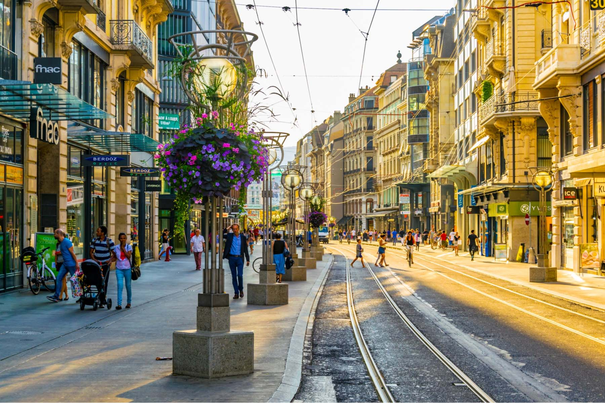
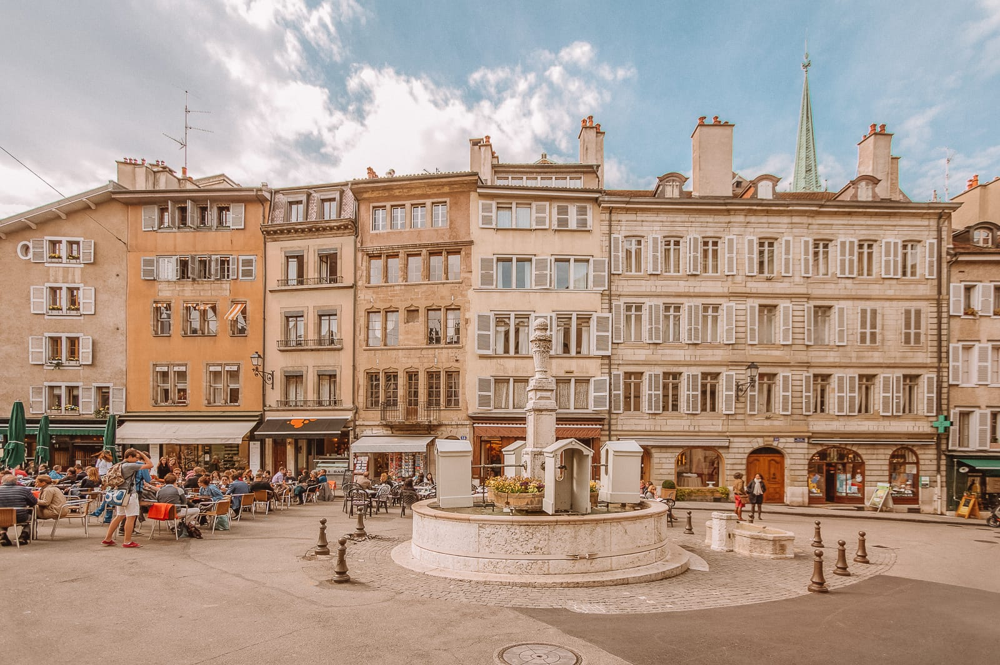

Switzerland
Switzerland officially the Swiss Confederation, is a landlocked country located at the confluence of Western, Central and Southern Europe.
It is a federal republic composed of 26 cantons, with federal authorities based in Bern.
Switzerland is bordered by Italy to the south, France to the west, Germany to the north and Austria and Liechtenstein to the east/
It is geographically divided among the Swiss Plateau, the Alps and the Jura, spanning 41,285 km2 (15,940 sq mi) with land area comprising 39,997 km2 (15,443 sq mi). The Alps occupy the greater part of the territory.
The Swiss population of approximately 8.7 million is concentrated mostly on the plateau, where the largest cities and economic centres are located, including Zürich, Geneva and Basel.
These three cities are home to the headquarters or offices of international organisations such as the WTO, the WHO, the ILO, FIFA, and the United Nations's second-largest office.
Switzerland has four main linguistic and cultural regions: German, French, Italian and Romansh. Although the majority population are German-speaking, Swiss national identity is rooted in its common historical background, shared values such as federalism and direct democracy,and Alpine symbolism.
This identity, which transcends language, ethnicity, and religion, has led to Switzerland being described as a Willensnation ("nation of volition") rather than a nation state.

The cuisine is multifaceted. While dishes such as fondue, raclette or rösti are omnipresent, each region developed its gastronomy according to the varieties of climate and language.
Traditional Swiss cuisine uses ingredients similar to those in other European countries, as well as unique dairy products and cheeses such as Gruyère or Emmental, produced in the valleys of Gruyères and Emmental. The number of fine-dining establishments is high, particularly in western Switzerland.
Chocolate has been made in Switzerland since the 18th century. Its reputation grew at the end of the 19th century with the invention of modern techniques such as conching and tempering, which enabled higher quality. Another breakthrough was the invention of solid milk chocolate in 1875 by Daniel Peter.
The Swiss are the world's largest chocolate consumers.
Due to the popularisation of processed foods at the end of the 19th century, Swiss health food pioneer Maximilian Bircher-Benner created the first nutrition-based therapy in the form of the well-known rolled oats cereal dish, called Birchermüesli.
The most popular alcoholic drink is wine. Switzerland is notable for its variety of grape varieties, reflecting the large variations in terroirs. Swiss wine is produced mainly in Valais, Vaud (Lavaux), Geneva and Ticino, with a small majority of white wines.
Vineyards have been cultivated in Switzerland since the Roman era, even though traces of a more ancient origin can be found. The most widespread varieties are the Chasselas (called Fendant in Valais) and Pinot Noir. Merlot is the main variety produced in Ticino.

Switzerland lies between latitudes 45° and 48° N, and longitudes 5° and 11° E. It contains three basic topographical areas: the Swiss Alps to the south, the Swiss Plateau or Central Plateau, and the Jura mountains on the west.
The Alps are a mountain range running across the central and south of the country, constituting about 60% of the country's area. The majority of the population live on the Swiss Plateau.
The Swiss Alps host many glaciers, covering 1,063 square kilometres (410 sq mi). From these originate the headwaters of several major rivers, such as the Rhine, Inn, Ticino and Rhône, which flow in the four cardinal directions, spreading across Europe.
The hydrographic network includes several of the largest bodies of fresh water in Central and Western Europe, among which are Lake Geneva (Lac Léman in French), Lake Constance (Bodensee in German) and Lake Maggiore. Switzerland has more than 1500 lakes and contains 6% of Europe's freshwater stock.
Lakes and glaciers cover about 6% of the national territory. Lake Geneva is the largest lake and is shared with France. The Rhône is both the main source and outflow of Lake Geneva. Lake Constance is the second-largest and, like Lake Geneva, an intermediate step by the Rhine at the border with Austria and Germany.
While the Rhône flows into the Mediterranean Sea at the French Camargue region and the Rhine flows into the North Sea at Rotterdam, about 1,000 kilometres (620 miles) apart, both springs are only about 22 kilometres (14 miles) apart in the Swiss Alps.
Forty-eight mountains are 4,000 metres (13,000 ft) or higher in height.At 4,634 m (15,203 ft), Monte Rosa is the highest, although the Matterhorn (4,478 m or 14,692 ft) is the best known.
Both are located within the Pennine Alps in the canton of Valais, on the border with Italy. The section of the Bernese Alps above the deep glacial Lauterbrunnen valley, containing 72 waterfalls, is well known for the Jungfrau (4,158 m or 13,642 ft) Eiger and Mönch peaks, and its many picturesque valleys.
In the southeast the long Engadin Valley, encompassing St. Moritz, is also well known; the highest peak in the neighbouring Bernina Alps is Piz Bernina (4,049 m or 13,284 ft).
The Swiss Plateau has greater open and hilly landscapes, partly forested, partly open pastures, usually with grazing herds or vegetable and fruit fields, but it is still hilly. Large lakes and the biggest Swiss cities are found there.
Switzerland contains two small enclaves: Büsingen belongs to Germany, while Campione d'Italia belongs to Italy.Switzerland has no exclaves.
The Swiss climate is generally temperate, but can vary greatly across localities,from glacial conditions on the mountaintops to the near-Mediterranean climate at Switzerland's southern tip.
Some valley areas in the southern part of Switzerland offer cold-hardy palm trees. Summers tend to be warm and humid at times with periodic rainfall, ideal for pastures/grazing. The less humid winters in the mountains may see weeks-long intervals of stable conditions.
At the same time, the lower lands tend to suffer from inversion during such periods, hiding the sun.